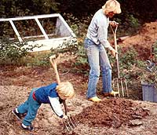
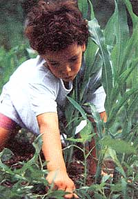

How do you get children to help in the garden? Suggestions by MOTHER's readers.
Let them help even when their "help" slows you down.
"Last summer I nursed, enjoyed and harvested from my best garden ever, but I did have one nagging failure-my kids. How do you get children really interested in gardening? How do you get them to help when they can see it involves real work? Would anyone be willing to pass on some tried-and-true advice? I could use it."
AFTER RUTH NEWSOME'S PLEA LED off our "Letters" pages in MOTHER No. 114, we received enough replies to convince us that most people who love raising both plants and children face the problem of bringing the two together. So, for Ruth and all the rest of us, we're sharing some of the responses here-along with advice from a few expert gardeners we know.
JUST AS WE MUST TEACH OUR CHILDREN that, for most of us, earn comes before spend, so must we also teach them that grow comes before eat. My husband and I told our kids, "This is it! Each one of us will grow his or her own supply of food for the next year, according to the person's age and abilities." So whoever was interested in eating graduated automatically from helper to grower.
This probably seems pretty harsh to you, Ms. Newsome, but I believe that this one hard fact of life, presented honestly and forthrightly, was-next to spiritual matters-the most rewarding and important thing that we tried to teach our young people.
And we kept a sense that, yes, this is hard work, but let's have some fun anyway. A few thrown dirt clods and other foolishness were perfectly acceptable. We still got the rows weeded.
I say, catch the kids through their stomachs.
-Marianna Woodcock Carder
Stewardson, Illinois
My mother always had a garden and fruit trees and flowers and compost piles. I couldn't have cared less. I was into Beatle music, surfing and girls-who cared about potatoes, tomatoes and dirt?
Flo, my mother, never forced me to work in the garden. Still, all my life I was around one. And this is my message to you, Ruth. Even though your children may not show an interest in gardening now, you are still doing your job. You are exposing them to the activity, and this will be a big influence on them when they mature.
I am proof of this. If gardening had been forced on me, I would have grown up hating it. But it wasn't, and guess what? Now I have a big garden (40' X 60'), a vineyard, fruit trees and a root cellar. It is February as I write this, and I still have potatoes and winter squash from last year's garden, home-canned vegetables-even sweet honey from my own beehive. I love my garden today, and I owe this love to my mother.
-Kim Yamaguchi
Paradise, California
Please tell Ruth Newsome that her plight is not unusual! My children melted into the woodwork when I mentioned the word "garden" to them! I doled out garden jobs for so long that they found their own garden challenges only by chance. But I was home free once I realized that if I appealed to each child's individual interest, I would get enthusiastic cooperation.
My oldest boy was a tinkerer, builder and innovator-so he asked for and got the job of revamping the design of the garden, putting in raised-bed boxes, constructing a movable trellis system, etc. He came up with ideas I never would have thought of.
My daughter began by rescuing a geranium I wanted to winter over-and now she grows all of our flowers.
My middle son wanted to grow catnip for his favorite puss. Now he has an herb bed that is beautiful, aromatic and deliciously productive.
My youngest boy loves worms-so he's the compost spreader.
All the kids were encouraged to "try it" when they asked, What if? And such projects were totally their responsibility. I didn't give advice unless asked (and they did ask). The two younger boys also liked to have early-carrot and big-pumpkin contests. Such sport inspired them to read, discover and experiment-all in the name of good fun. We still fondly remember the three tomato plants that "listened" to music to encourage growth, our cardboard-and-foil melon reflectors and the time we scratched faces into immature pumpkins and watched the features grow!
So please, Ruth, don't give up. Make the garden a place of fun and discovery. Challenge them to contests; ask them, What if? Give them lots of encouragement . . . and praise, praise, praise!
-Timmi Jo Forbes
Bothell, Washington
When gardening really is work, nobody likes it, so offer an incentive. Keep a chart so the children can work for a reward (like going to a movie or for pizza; ice cream works great for three-year-olds). Or pay them a wage, depending on age and ability.
-Miriam Williams
Beloit, Wisconsin
I've experimented with payment-with mixed results. A penny a Japanese beetle works fairly well. The only problem is that some days the kids don't feel like earning money.
Sometimes a trade-off works well. They want me to do a project or game with them; I want help in the garden. So we take turns and get both done.
The profit motive inspired young Hate Stone.
What's worked best with son Nathan is helping him maintain a crop he can eventually sell: Miniature pumpkins were very successful. He's now experimenting with garlic (for braids) and ornamental corn. He even weeds his crops himself! (Well, sometimes.) Daughter Jesse doesn't yet have much urge to earn lucre. Growing dried flowers for future decorations and art projects has been the most enticing garden project for her.
-Pat Stone
Hendersonville, North Carolina
How do you get your kids to help? Consistency is the key word. Say what you expect from them, and don't back down because of guilt feelings or because it is easier to do it yourself. (For at least 10 to 12 years, it will be much easier to do it yourself.) There are hundreds of ways a child can thwart you, particularly in a garden where it is so easy to destroy. For every piece of work destroyed, however, a child must understand and participate in the compensation. Soon they learn that it is easier and more satisfying to do a good job. Of course, the most important aspect is to give praise and positive reinforcement.
There are many ways for children to gain recognition for their work in the garden. At meals we list all the homegrown things that we are eating. Our youngsters love to enter local fairs. Our two oldest run our table at the farmer's market.
Still, while you can make your kids work, you can't make them love gardening-or anything else, really. That will, or won't, come from inside them.
-Julie Rawson
Barre, Massachusetts
My four- and five-year-olds spent a fun-filled and productive season in last summer's garden. To keep them involved, I let them each choose their own garden spot within the main garden. We lined each area with rocks to clearly define the boundaries. The children could plant whatever they wanted within their own spaces. My daughter opted for flowers, so she picked out a packet of seed plus several bedding plants at the local nursery. My son, on the other hand, was entranced with the smell of the wild spearmint at the stream nearby. We carefully dug and transplanted a bit of this to his garden. He then added purchased starter plants, such as lavender and thyme, and planted sweet basil from seed.
The combination of growing plants from seed plus the immediate attraction of partially mature plants magically excited my children's interest. With minimal assistance, they watered, weeded, fertilized and harvested their own blooms and produce.
-Denise Wang
Clinton, Montana
My husband, David, and I share a bio-intensive market garden, an outside job and the care of our three-year-old son, Cassidy. Out of necessity, we are constantly balancing Cassidy's needs and those of the garden.
What our son enjoys most is genuinely helping-and he can usually tell when jobs are invented just to keep him busy. With a little thought on our part, we can find real contributions he can make to most garden tasks.
We have learned to set a routine (flexible though it may be) so that Cassidy knows what to expect. This includes several outdoor work sessions, and some breaks or indoor playtimes.
Cassidy can often sense when I'm not well organized and able to be pulled away from garden work. This is precisely when he becomes clingy and whiny. Things go better when I keep ahead of his needs by anticipating when he needs a change of focus and by taking frequent breaks.
-Cindy Gebhard
Bohannon, Virginia
Our children are now 27 and 29 and have gardens and kids of their own. Both our son and daughter had their own little garden spaces when they were small. I think it is important, when encouraging the child in the garden, to 1) give them good soil, not a reject space that is just builder's fill; 2) respect their preferences about what they want to grow; and 3) suggest at least a few fast maturing crops so they'll get quick results.
When they grew older, our children would sometimes be asked to help with specific tasks-picking tomatoes or gathering dug-up potatoes-when extra hands were needed. Ours accepted the "let's all get this done" approach best. (Sending a kid out to weed alone doesn't work so well.) So we always worked on a project-oriented basis, made it clear that we considered the children invaluable members of the team, took their ideas seriously and thanked them for their help. Kids seem more willing to work on jobs that have an obvious purpose-they can see that the tomatoes are hanging heavy on the vine and need to be picked-rather than on less immediately satisfying chores like turning compost.
-Nancy Bubel
Wellsville, Pennsylvania
Share your enthusiasm with your kids. Show them (and let them touch, taste, smell or play with) all the beautiful and interesting things in the garden: the earthworm, the first radish seedlings, the smooth corn silk, the fierce tomato hornworm.
Let them help you whenever they show a willingness to, even if their "help" slows you down. Sure, maybe they will pick an asparagus stalk too early or a flower seedling instead of a weed, but they learn surprisingly quickly if you don't get too exasperated with them.
Sometimes they just like to be out there with you. Let them enjoy themselves playing in the dirt (we have special finely tilled areas for this) or exploring or playing with a woolly worm or just running around. Even when they show an interest in helping, don't expect help for too long.
Ask but don't force them to help unless you really need it. Our kids usually willingly help in an emergency (such as getting in the remains of the harvest before an early frost), but they can easily sense when we are just trying to get them to do something we don't want to do. Also, don't expect them to do a task as well as you can.
Some kids naturally like to fool with plants; others may be more mechanically inclined or like to cook. Don't insist that every child garden. If they really hate it, let them do dishes instead. Your garden and your children will be better off for it.
-Greg and Pat William
Gravel Switch, Kentucky
WHEW! SO THERE YOU HAVE IT: A good assortment of helpful tips along with some clearly contrasting child-rearing philosophies. Still, we can all heed these last words from Nancy Bubel: "In all this, we need to continually remind ourselves that the child and his or her development matters more than any garden job that needs to be done."
|
 As young Cassidy Duhon demonstrates, many children really enjoy at least one garden task- digging! |
 The profit motive inspired young Nate Stone. |
|